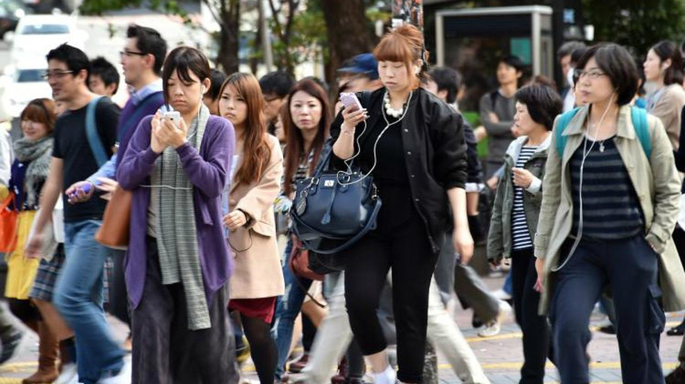

Liputan6.com, Jakarta - Saat pandemi corona COVID-19 menyebar dan jumlah mereka yang terinfeksi dan kematian meroket di berbagai lokasi di seluruh dunia, teka-teki muncul di Jepang karena relatif lambatnya peningkatan angka-angka tersebut di sana.
Dilansir dari Japan Times, Sabtu, 4 April 2020, penjelasan tambahan untuk angka-angka tersebut telah terbentuk di ruang publik, bahwa praktik budaya Jepang mungkin berada di belakang laju epidemi yang relatif lambat di sana. Contoh dari sudut pandang ini adalah tweet viral dari @sctm_27 pada 25 Maret, yang telah mengumpulkan lebih dari 42 ribu suka pada tulisan ini.
Daftar budaya Jepang yang telah terbentuk itu di antaranya, budaya mengenakan masker, sangat sedikit bersentuhan, seperti memeluk atau berjabat tangan. Selain itu, warga Jepang tidak memakai sepatu di rumah, kebersihan toilet umum dan restoran, dan air bersih dan udara. Hal-hal itu sebagai penjelasan potensial terhadap teka-teki rendahnya angka corona COVID di sana. Demikian pula, sebuah unggahan blog populer tentang strategi COVID-19 Jepang yang menyebutkan bahwa mencuci tangan dan mengenakan masker, serta kurangnya jabat tangan dan pelukan.
Dalam thread Twitter baru-baru ini, ahli biologi sel Hironori Funabiki menyebut masker, kurangnya berbicara tentang transportasi umum, beberapa majelis agama dan fakta bahwa beberapa makanan disantap dengan tangan disebut sebagai senjata penangkal penyakit di Jepang.
Meskipun masker memang berguna, dan kebersihan umum Jepang jelas merupakan sesuatu yang dikagumi, tetap masih sulit untuk mengetahui apakah itu saja yang bertanggung jawab atas angka COVID-19 Jepang yang rendah.
Spesialis penyakit menular Universitas Kobe, Kentaro Iwata, menolak pendekatan berbasis budaya terkait virus corona baru. "Saya tidak berpikir Anda dapat menetapkan atribut berdasarkan budaya," katanya. "Tidak peduli apa budaya itu, jika kamu lengah, kamu akan cepat menjadi penyebaran (virus corona)."
Teori pengecualian Jepang itu bisa berbahaya jika mereka menumbuhkan rasa puas diri atau bahkan tidak terkalahkan. Hal itu yang menyebabkan orang mengendur terhadap jarak sosial, sehingga terjadi lonjakan mereka yang terinfeksi.